import numpy as np
import matplotlib.pyplot as pltDimensionality Reduction: What It Is, and Why Does It Matter?
Python
machine-learning
dimensionality-reduction
A beginner-friendly walkthrough of PCA, MDS, t-SNE, K-means, and logistic regression — from simulated data to a real chemistry dataset
NoteAcknowledgment
The code in this post is adapted from a recitation notebook for the Machine Learning with Python: From Linear Models to Deep Learning course, part of the MITx MicroMasters Program in Statistics and Data Science. I’ve rewritten it here as an annotated, from-scratch teaching walkthrough, with plain-language explanations of both the code and the results.
The questions this post answers
Imagine you’ve measured 100 different things about each of several thousand samples — maybe gene activity levels, or chemical concentrations, or pixel brightness values. Each sample is a point floating in 100-dimensional space. Humans can’t picture 100 dimensions. We can barely picture 3. So before we can even ask “are there natural groups in this data?”, we need a way to compress that 100-dimensional cloud down into something we can actually look at — usually 2 dimensions, a normal scatter plot.
This post works through that whole problem, end to end, using a mix of simulated data (where we secretly know the right answer, so we can check our work) and a real dataset (wine chemistry). Specifically, we’ll investigate:
- Can you trust a plain scatter plot of high-dimensional data? (Spoiler: usually not — we’ll show why.)
- Do different dimensionality-reduction methods (PCA, MDS, t-SNE) agree with each other, and does it matter which one you pick?
- Can an algorithm that doesn’t know the “true” groups (K-means) figure out how many groups there really are, using only diagnostic statistics?
- Applied to real wine chemistry data: can unsupervised clustering rediscover the 3 known grape varieties, using chemistry alone, with no labels?
- Can a classifier trained on just 2 of the 13 chemical measurements do almost as well as one trained on all 13 — and can we find out mathematically which 2 measurements matter most?
Every code block below has two parts: a plain-language explanation before the code (what we’re about to do and why), and an interpretation after the plot or output (what the result actually tells us, explained the way you’d explain it to a curious high schooler, not a statistics professor).
Setup
Two tools, two jobs. numpy (imported as np) is for working with grids of numbers — think of it as a supercharged version of a spreadsheet that Python can do math on quickly. matplotlib.pyplot (imported as plt) is what actually draws the charts you’ll see throughout this post.
Part 1 — Building “fake” data where we already know the answer
Before trying these techniques on real, messy data, it’s smart to first try them on data we built ourselves — because then we already know the correct answer, and we can check whether the method actually found it.
Here’s the plan: we’ll invent 4 make-believe groups of data points, each living in 100 dimensions (think of 100 as “100 different measurements per sample” — could be 100 genes, 100 chemical readings, anything). Each group will be centered in a different part of that 100-dimensional space, so a perfect method should be able to tell all 4 groups apart.
from scipy.stats import ortho_group # generates random rotation matricesortho_group is a tool for generating a random rotation — a mathematical operation that spins a shape around without stretching or squishing it, kind of like rotating a photograph without warping it. We’ll use this in a minute to make one of our 4 groups look more “realistic” (tilted at a random angle) instead of perfectly lined up with the axes, the way real-world data usually is.
# Draws random points from `n // (# groups)` samples per group, from a multivariate
# normal ("bell curve" in many dimensions) distribution with given means and shapes.
def sample_gmm(n, mu, cov, return_labels=True):
data = np.vstack([np.random.multivariate_normal(mu[i], cov[i], size=n//mu.shape[0]) for i in range(mu.shape[0])])
labels = np.hstack([i*np.ones(n//mu.shape[0]) for i in range(mu.shape[0])])
perm = np.random.permutation(data.shape[0])
if return_labels:
return data[perm], labels[perm]
return data[perm]Think of this function as a random point generator with a memory of which group each point belongs to. In plain terms:
- For each of our 4 groups, it randomly scatters points around that group’s center, the same way a dartboard scatters darts around a bullseye — some land dead center, most land a bit off, a few land far off.
- It keeps a label for every point recording which group it “belongs to” — this is our ground truth, the answer key we’ll use later to check whether our methods got it right.
- It shuffles all the points together at the end, so the data doesn’t come “pre-sorted” by group (which would be cheating — real data never comes conveniently sorted for you).
d = 100
mu = np.zeros((4,d))
mu[0,1:]=1
mu[1,1:40]=1
mu[1,40:]=0.5
mu[2,1:]=-1
mu[3,1:95]=-1
mu[3,96]=2Here we’re setting the center point (“bullseye”) of each of our 4 groups, each one somewhere different in our 100-dimensional space. Group 0 sits at one location, group 1 at another, and so on — each group gets a different pattern of high/low values across the 100 measurements, so no two groups occupy the same territory.
np.random.seed(350)
d_cov=np.zeros((4,d,d))
d_cov[0] = 0.05*np.eye(d)
rot = ortho_group.rvs(d)
mat = np.eye(d)
mat[0,0] = 3.0
mat[1,1] = 1.0
d_cov[1] = np.dot(rot, np.dot(mat,rot.T))
d_cov[2] = 0.5*np.eye(d)
d_cov[3] = 0.02*np.eye(d)
cov = d_covnp.random.seed(350) is like writing down the exact starting position of a dice roll — it makes our “random” data reproducible, so anyone who runs this code gets the identical result. Always do this when you want to be able to debug or reproduce your own work later.
The rest of this block controls how spread out and what shape each group is:
- Groups 0 and 3 are small, tight, round little clusters (imagine a tight huddle of people).
- Group 2 is a bigger, but still round, cluster (a looser huddle).
- Group 1 is stretched into a cigar/football shape and then tilted at a random angle (using the rotation tool from before) — this is meant to look more like messy real-world data, where clusters aren’t neat circles.
X,y = sample_gmm(1200,mu,cov)
print("Data shape:", X.shape)
print("Number of groups:", len(np.unique(y)))Data shape: (1200, 100)
Number of groups: 4Now we actually generate the data: 1,200 total points (300 per group), scattered across 100 dimensions. X is our giant data table (1,200 rows, 100 columns); y is the secret answer key telling us which of the 4 groups each row really belongs to.
Part 2 — Why a normal scatter plot fails here
fig, axes = plt.subplots(1, 2, figsize=(12,5))
axes[0].scatter(X[:,0],X[:,1])
axes[0].set_title("Raw scatter (no group info)",size=14)
axes[0].set_xlabel("x1",size=12)
axes[0].set_ylabel("x2",size=12)
axes[0].axis("equal")
axes[1].scatter(X[:,0],X[:,1],c=y)
axes[1].set_title("Raw scatter (colored by TRUE group)",size=14)
axes[1].set_xlabel("x1",size=12)
axes[1].set_ylabel("x2",size=12)
axes[1].axis("equal")
plt.tight_layout()
plt.show()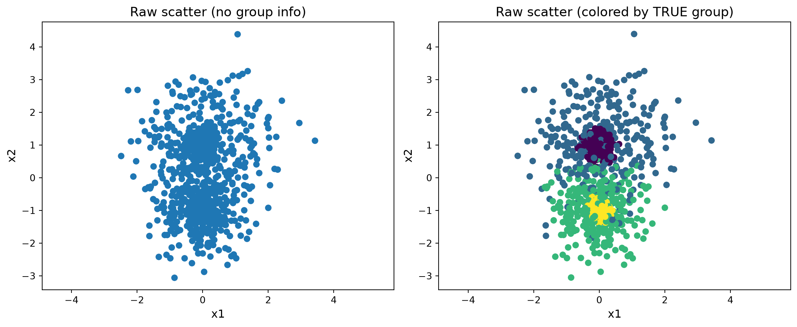
This plots just the first 2 out of our 100 measurements — literally just picking 2 columns out of the data table and plotting them against each other, since that’s all a normal scatter plot can show.
How to read this plot: on the left, every dot is the same color because we’re pretending we don’t know the groups. On the right, we’ve secretly colored each dot by its true group, just to see what we’re missing. If you’re looking at this and thinking “it just looks like a blob, I can’t tell the groups apart even with the colors turned on” — that’s exactly the point being made. Two dimensions out of 100 essentially never happen to be the two dimensions where the real separation between groups is visible. It’s like trying to tell four different countries apart by looking only at their average rainfall and average temperature — you’re throwing away 98 other pieces of information that might actually distinguish them.
Part 3 — PCA: finding the “best” 2D summary
Plain-language idea: instead of picking 2 of our original 100 measurements at random, what if we let the computer search for the best possible 2 new “measurements” — ones specifically chosen to spread the data out as much as possible? That’s what PCA (Principal Component Analysis) does.
from sklearn.decomposition import PCA
pca = PCA()
z = pca.fit_transform(X)PCA() creates the tool; .fit_transform(X) does two things at once — it studies our 100-dimensional data to find the best new “viewing angles” (called principal components), and then immediately re-expresses every data point in terms of those new angles. The result, z, is a new table the same size as X, but now the first column captures the most spread-out view of the data, the second column the next-most, and so on.
plt.scatter(z[:,0],z[:,1],c=y)
plt.title("First 2 Principal Components (colored by true group)",size=16)
plt.xlabel("PC 1",size=13)
plt.ylabel("PC 2",size=13)
plt.axis("equal")
plt.show()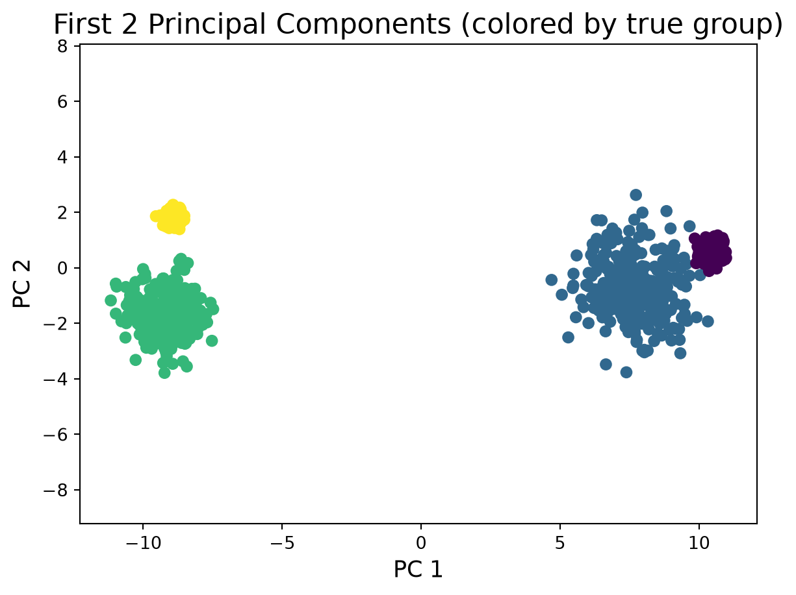
Interpreting this plot: unlike the raw scatter plot from before, you should now clearly see the 4 groups separated — likely as 2 large, well-separated blobs and 1 or 2 smaller ones. This is a big deal: PCA managed to find a 2D “camera angle” on our 100-dimensional data that actually reveals the true structure, without ever being told what the true groups were. It did this purely by hunting for the directions where the data varies the most.
How many “principal components” should we actually keep?
If PC1 and PC2 already show clear groups, do we need PC3, PC4, … PC100 at all? Here are three ways to decide, explained simply:
Method 1 — The “elbow” plot. Plot how much information (variance) each component captures, in order. Early components usually capture a lot; later ones capture almost nothing. We’re looking for the point where the curve flattens out — like the elbow of a bent arm.
plt.figure(figsize=(8,5))
plt.plot(np.arange(1,101),pca.explained_variance_ratio_[0:100],marker='o',markersize=3)
plt.title("% of Information (Variance) Captured by Each Component",size=15)
plt.xlabel("Component #",size=12)
plt.ylabel("Fraction of Variance Explained",size=12)
plt.show()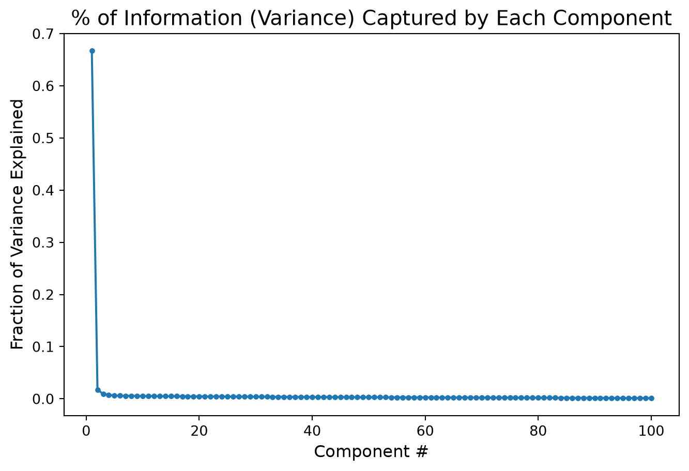
Interpreting this plot: the first component captures far more information than any single one of our original 100 measurements would on its own — that’s the whole point of PCA. Notice how quickly the curve drops and then flattens near zero — that flat tail means components 5, 6, 7… onward are basically capturing noise, not real structure. This tells us we could safely summarize our whole 100-dimensional dataset using just a handful of components without losing much real information.
Method 2 — Cumulative variance threshold. Instead of eyeballing an elbow, just decide “I want to keep 85% of the total information” and let the math tell us exactly how many components that requires.
cumulative = np.cumsum(pca.explained_variance_ratio_)
n_needed = np.where(cumulative >= .85)[0][0] + 1
plt.figure(figsize=(8,5))
plt.plot(np.arange(1,101),cumulative,marker='o',markersize=3)
plt.axhline(0.85, color='red', linestyle='--', label='85% threshold')
plt.axvline(n_needed, color='red', linestyle='--')
plt.title("Cumulative Variance Explained",size=15)
plt.xlabel("Number of Components",size=12)
plt.ylabel("Cumulative Fraction of Variance Explained",size=12)
plt.legend()
plt.show()
print(f"Components needed to explain 85% of the variance: {n_needed}")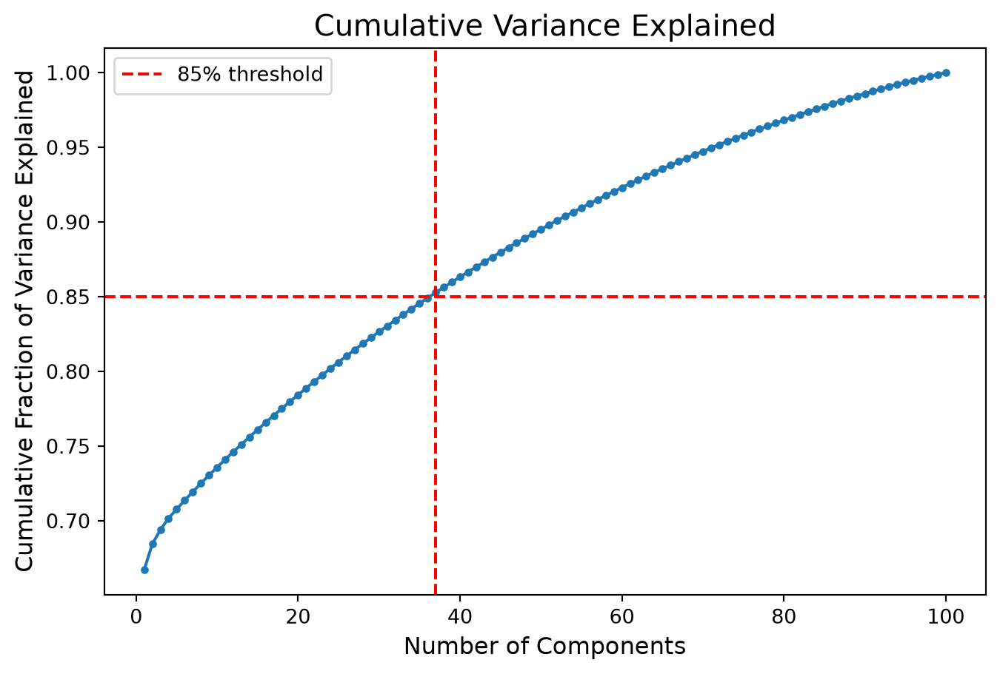
Components needed to explain 85% of the variance: 37Interpreting this: the red dashed lines mark where our running total first crosses 85%. Whatever number gets printed above tells us: “you can throw away all but this many components and still keep 85% of the real information in the original 100-dimensional dataset.” That’s a genuinely useful data-compression result — and it means most of our 100 original measurements were, in a sense, redundant with each other.
Part 4 — MDS: a different philosophy for the same goal
Plain-language idea: PCA looks for directions of maximum spread. MDS (Multidimensional Scaling) takes a totally different approach: it tries to place points on a 2D page so that the distances between them on the page match, as closely as possible, how far apart they really are in the original 100-dimensional space. It’s like trying to flatten a globe into a 2D map while distorting distances as little as possible.
from sklearn.manifold import MDS
mds = MDS(n_components=2, eps=1e-5, n_init=4)
mds_embedding = mds.fit(X)
plt.scatter(mds_embedding.embedding_[:,0],mds_embedding.embedding_[:,1],c=y)
plt.title("MDS Plot (colored by true group)",size=16)
plt.axis("equal")
plt.show()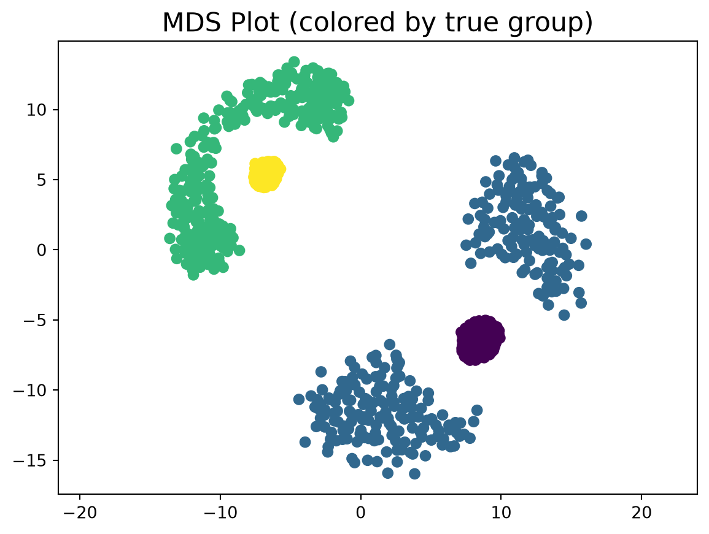
Interpreting this plot: you should again see the same 4 groups emerge as distinct clusters, though the plot may look “stretched” or “flipped” differently from the PCA plot — that’s completely normal and not a mistake. What matters is which points are grouped with which other points, not the exact orientation of the plot; MDS has no reason to line up with PCA’s particular choice of axes.
NoteTechnical note
scikit-learn’s MDS uses a “stress” minimization approach, which makes it a genuinely different, nonlinear method — mathematically, it is not the same as PCA, even though a related method called “classical MDS” (common in R) actually is mathematically equivalent to PCA. If you’re comparing code between R and Python, don’t assume MDS() gives identical results in both languages.
Part 5 — t-SNE: built for finding tight local clusters
Plain-language idea: t-SNE takes yet another approach — instead of trying to preserve all pairwise distances (like MDS) or maximize spread (like PCA), it focuses specifically on preserving who’s in whose immediate neighborhood. It’s very good at pulling tight clusters apart visually, but — and this is important — the distance between clusters on a t-SNE plot doesn’t mean anything reliable. Two clusters that look close together in a t-SNE plot might actually be very far apart in the real data, or vice versa.
from sklearn.manifold import TSNE
tsne_40 = TSNE(n_components=2, perplexity=40, random_state=0)
z_tsne_40 = tsne_40.fit_transform(X)
tsne_5 = TSNE(n_components=2, perplexity=5, random_state=0)
z_tsne_5 = tsne_5.fit_transform(X)
fig, axes = plt.subplots(1, 2, figsize=(13,5.5))
axes[0].scatter(z_tsne_40[:,0],z_tsne_40[:,1],c=y)
axes[0].set_title("t-SNE, perplexity 40",size=15)
axes[0].axis("equal")
axes[1].scatter(z_tsne_5[:,0],z_tsne_5[:,1],c=y)
axes[1].set_title("t-SNE, perplexity 5",size=15)
axes[1].axis("equal")
plt.tight_layout()
plt.show()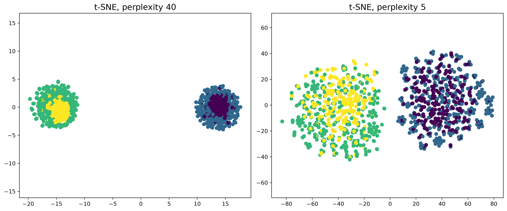
perplexity is t-SNE’s main dial to turn — loosely, it controls how many “neighbors” each point pays attention to when deciding what counts as its local neighborhood.
Interpreting this plot: compare the two panels. With perplexity 40 (more neighbors considered), the 4 groups usually appear as smoother, more clearly separated blobs. With perplexity 5 (very few neighbors considered), the algorithm zooms in so tightly on local structure that a single true group can get visually fragmented into multiple smaller-looking pieces, or the overall picture can look noisier. Neither setting is “the correct one” in an absolute sense — this is why it’s good practice to try a few different perplexity values and sanity-check the result, rather than trusting a single run blindly.
Combining PCA and t-SNE
A common, genuinely useful trick: use PCA first to strip out low-information “noise” dimensions, then hand the cleaned-up data to t-SNE.
tsne_on_pca = TSNE(n_components=2, perplexity=40, random_state=0)
z_tsne_pca = tsne_on_pca.fit_transform(z[:,0:10])
plt.scatter(z_tsne_pca[:,0],z_tsne_pca[:,1],c=y)
plt.title("t-SNE run on the first 10 Principal Components",size=16)
plt.axis("equal")
plt.show()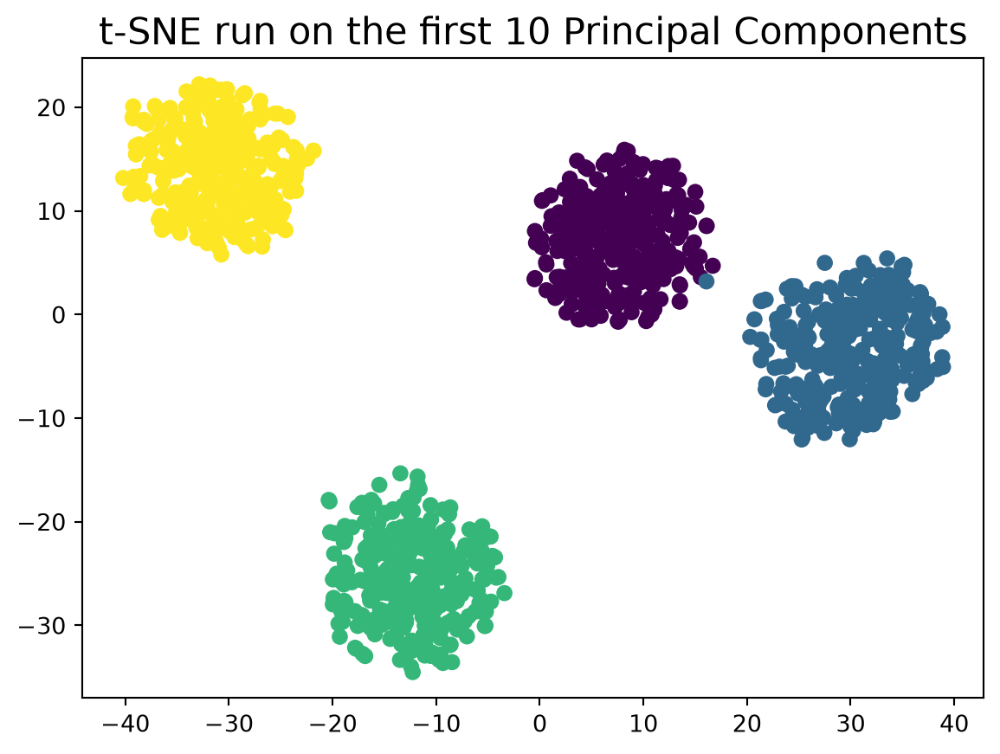
Interpreting this: notice how much crisper and tighter these 4 clusters look compared to running t-SNE on the full, raw 100-dimensional data. That’s because the first 10 principal components already contain almost all the real signal (we saw that in the elbow plot earlier) — feeding t-SNE this “denoised” version lets it focus entirely on real structure instead of getting distracted by noisy, uninformative dimensions.
When does t-SNE clearly beat PCA?
Let’s build a harder test case: 25 separate groups instead of 4, each one tucked into a different single dimension.
mu2 = np.zeros((25,100))
for i in range(25):
mu2[i,i] = 1
cov2 = [0.02*np.eye(100) for _ in range(25)]
X2,y2 = sample_gmm(1000,mu2,cov2)
pca2 = PCA()
z2 = pca2.fit_transform(X2)
tsne2 = TSNE(n_components=2, perplexity=30, random_state=0)
z2_tsne = tsne2.fit_transform(X2)
fig, axes = plt.subplots(1, 2, figsize=(13,5.5))
axes[0].scatter(z2[:,0],z2[:,1],c=y2,cmap='tab20')
axes[0].set_title("PCA on 25-group data",size=15)
axes[0].axis("equal")
axes[1].scatter(z2_tsne[:,0],z2_tsne[:,1],c=y2,cmap='tab20')
axes[1].set_title("t-SNE on 25-group data",size=15)
axes[1].axis("equal")
plt.tight_layout()
plt.show()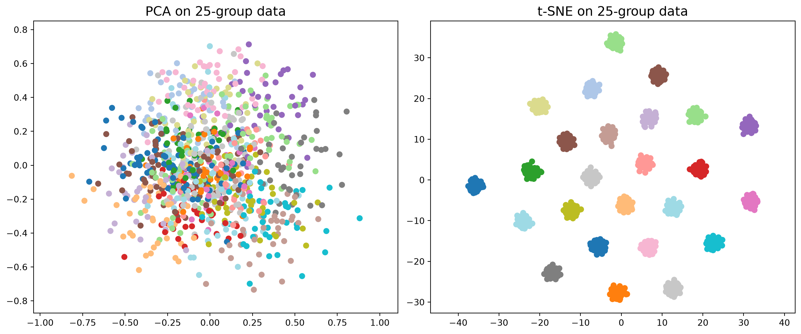
Interpreting this: on the left (PCA), the 25 groups are mostly smeared together into a blob, since no single pair of components can capture 25 separate directions of separation at once. On the right (t-SNE), the 25 groups typically pull apart into distinct little clusters. The lesson: PCA is at its best when the important structure in your data is genuinely “big-picture” and spread across just a few dominant directions. t-SNE is at its best when you have many small, tightly-packed groups that don’t line up neatly with just a few directions. Neither tool is “better” in general — it depends on the shape of your data.
Part 6 — K-means: letting the computer find groups on its own
Everything so far has been about visualizing groups we already knew about. Now let’s flip it around: pretend we don’t know the answer, and ask the computer to find groups for us. This is called clustering, and K-means is the most common starting point.
from sklearn.cluster import KMeans
kmeans = KMeans(n_clusters=4, n_init=10)
y_pred = kmeans.fit_predict(z)
fig, axes = plt.subplots(1, 2, figsize=(13,5.5))
axes[0].scatter(z[:,0],z[:,1],c=y_pred)
axes[0].set_title("K-means' guess (k=4)",size=15)
axes[0].axis("equal")
axes[1].scatter(z[:,0],z[:,1],c=y)
axes[1].set_title("The actual truth",size=15)
axes[1].axis("equal")
plt.tight_layout()
plt.show()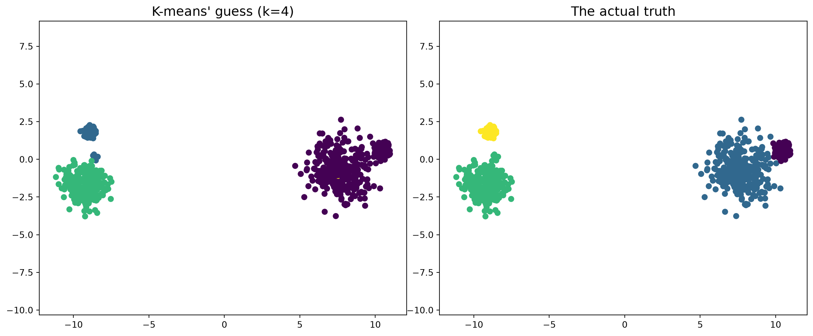
Plain-language idea: K-means works like this — plant k random “flags” in the data, assign every point to its nearest flag, move each flag to the average position of the points assigned to it, and repeat until nothing changes. n_init=10 means we repeat this whole process 10 times from different random starting flags and keep the best result, since K-means can occasionally get “stuck” in a mediocre solution depending on where the flags started.
Interpreting this plot: compare the left panel (K-means’ guess, having never seen the true labels) against the right panel (the actual truth). They should look extremely similar in shape, even if the color numbers don’t match up exactly — K-means has no way of knowing that “group 0” in its guess should be called “group 0” in the answer key; it can only detect that groups exist, not what to call them. If the shapes visually match, K-means successfully rediscovered the true structure blind.
How many clusters are really there? Two diagnostic tools
In real life, we don’t get to peek at the answer key. So how would we know to pick k=4 if we hadn’t built this data ourselves? Two common diagnostics:
Diagnostic 1 — The elbow method. Fit K-means for several different values of k, and for each one, measure the total “wobbliness” left inside the clusters (technically called inertia, or within-cluster sum of squares — basically, how far, on average, points are from their own cluster’s center).
all_kmeans = [KMeans(n_clusters=i+1, n_init=100).fit(X) for i in range(8)]
inertias = [all_kmeans[i].inertia_ for i in range(8)]
plt.figure(figsize=(8,5))
plt.plot(np.arange(1,9),inertias,marker='o')
plt.title("K-means Elbow Plot",size=16)
plt.xlabel("Number of Clusters (k)",size=12)
plt.ylabel("Within-Cluster Sum of Squares (lower = tighter clusters)",size=12)
plt.show()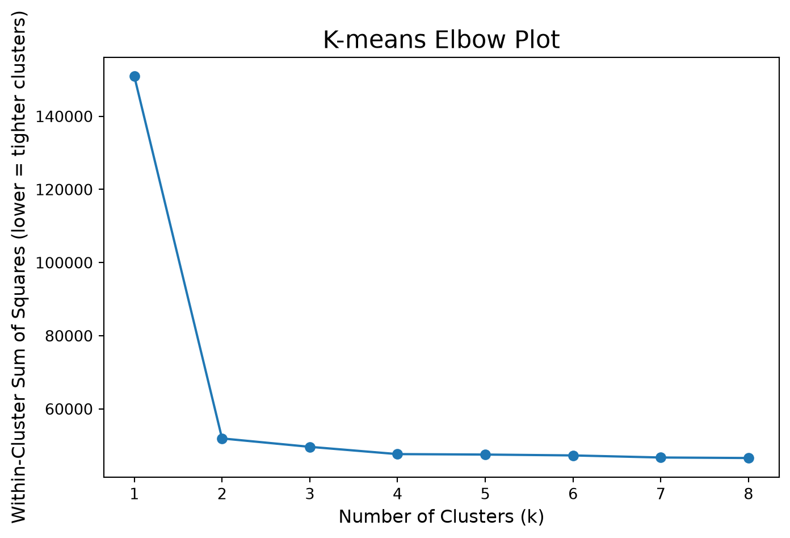
Interpreting this plot: the line always goes down as k increases — that’s expected and not informative by itself (more clusters can only ever make each individual cluster tighter, at the extreme limit of “1 cluster per point” the wobbliness hits zero). What we’re actually looking for is the elbow — the point where the line stops dropping steeply and flattens out. That’s the signal that adding more clusters beyond that point isn’t buying you much. If this plot bends sharply around k=4, that’s the diagnostic correctly pointing us back toward the true answer, without ever having seen it.
Diagnostic 2 — Silhouette score. For every point, this measures: “am I much closer to my own cluster than to the next-nearest cluster?” It’s averaged into one number per value of k, ranging from -1 (bad clustering) to +1 (great clustering).
from sklearn.metrics import silhouette_score
avg_silhouette_scores = [silhouette_score(X,all_kmeans[i].labels_) for i in range(1,8)]
plt.figure(figsize=(8,5))
plt.plot(np.arange(2,9),avg_silhouette_scores,marker='o')
plt.title("Average Silhouette Score by Number of Clusters",size=16)
plt.xlabel("Number of Clusters (k)",size=12)
plt.ylabel("Average Silhouette Score",size=12)
plt.show()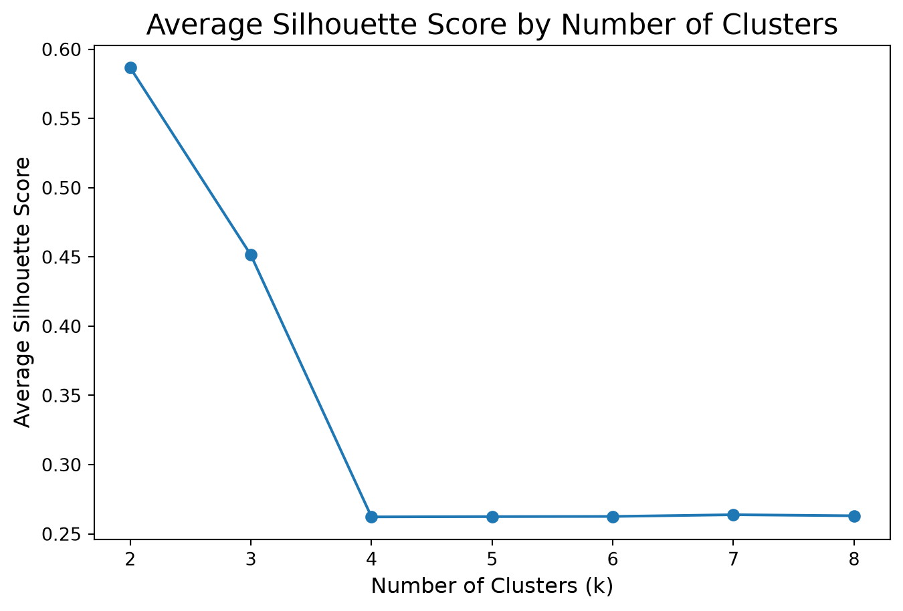
Interpreting this plot: we’re looking for the peak — the value of k with the highest score, meaning clusters are, on average, as tight and well-separated from each other as possible at that setting. A friendly warning worth remembering: silhouette scores can look surprisingly low, even negative, on high-dimensional data even when the clusters look perfectly clean in a PCA or t-SNE plot. High dimensionality does strange, counterintuitive things to plain distance measurements. So treat a discouraging silhouette score as one clue among several, not as an automatic verdict.
A more detailed silhouette picture, with the Yellowbrick visualizer
The single average silhouette score above hides some detail. Yellowbrick’s SilhouetteVisualizer shows the silhouette score for every individual point, grouped by cluster, as a set of horizontal bars — this reveals whether some clusters are much “worse” (more mixed-up) than others, which the single average number can hide.
from yellowbrick.cluster import SilhouetteVisualizer
# NOTE: Yellowbrick was written against an older version of scikit-learn's internal API.
# Newer scikit-learn versions removed the `_estimator_type` attribute that Yellowbrick
# checks for, causing a spurious "not a clustering estimator" error. Setting this
# attribute manually on an already-fitted model works around the incompatibility
# without changing any actual clustering behavior.
def as_clusterer(fitted_model):
fitted_model._estimator_type = "clusterer"
return fitted_modelWe only need to define this little fix once. Now let’s look at the silhouette breakdown for a few different values of k, side by side with what the clusters actually look like in our PCA plot:
for i in range(1, 4): # shows k = 2, 3, 4 clusters
fig, (ax1, ax2) = plt.subplots(1, 2, figsize=(11,4.5))
model = as_clusterer(all_kmeans[i])
visualizer = SilhouetteVisualizer(model, colors='yellowbrick', is_fitted=True, ax=ax1)
visualizer.fit(X)
ax2.scatter(z[:,0],z[:,1],c=all_kmeans[i].labels_)
ax2.set_title(f"k={i+1} clusters, PCA view",size=13)
ax2.axis("equal")
visualizer.finalize()
plt.tight_layout()
plt.show()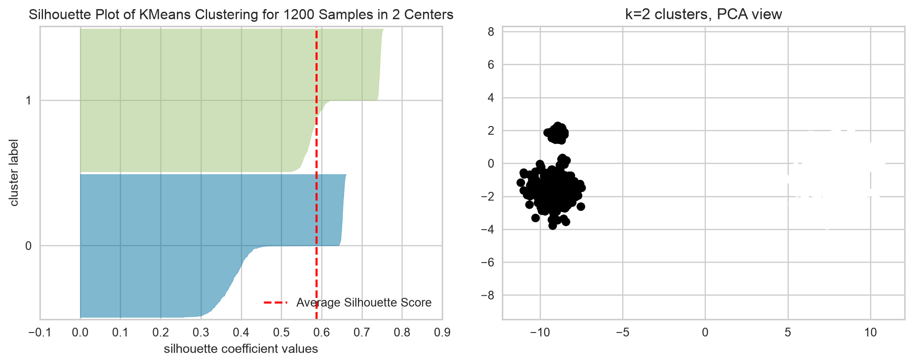
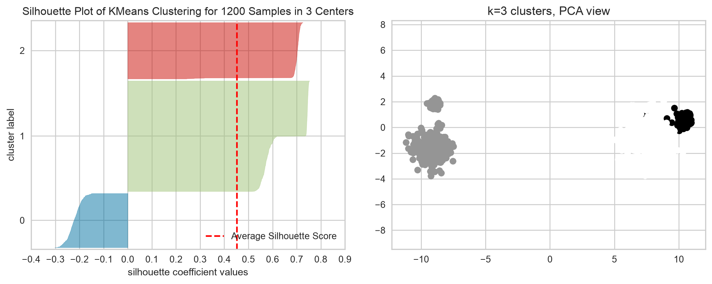
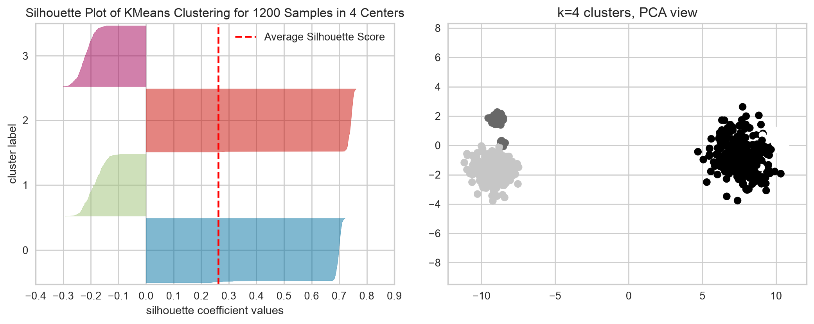
Interpreting these plots: in each pair, the left panel shows one horizontal “silhouette blade” per cluster — a wide, uniformly long blade that mostly stays to the right of the red dashed average line means that cluster’s points are tightly and confidently grouped. A thin, short, or negative blade means that cluster is weak or poorly separated. The right panel shows the same clustering laid over our PCA plot, so you can visually confirm what the silhouette blades are telling you numerically. When we get to k=4 (matching our true number of groups), you should see 4 fairly healthy, similarly-sized blades — good visual confirmation that 4 is indeed the right choice, arrived at without ever consulting the answer key.
Part 7 — Real data: applying everything to actual wine chemistry
Time to leave invented data behind. We’ll use a classic, real dataset: chemical measurements taken from wines made from 3 different grape cultivars grown in the same region of Italy.
from sklearn.datasets import load_wine
features, target = load_wine(return_X_y=True)
print("Number of wine samples:", features.shape[0])
print("Number of chemical measurements per sample:", features.shape[1])
print("Number of true grape varieties:", len(np.unique(target)))Number of wine samples: 178
Number of chemical measurements per sample: 13
Number of true grape varieties: 3features holds 13 chemical measurements per wine sample (things like alcohol content, magnesium level, color intensity). target holds the true grape variety for each sample — but we’re going to pretend we don’t know this for the clustering part, exactly like a wine scientist trying to verify that 3 chemically distinct styles really exist, using only the chemistry.
wine_std = (features - np.mean(features,0))/np.std(features,0)Why this step matters: our 13 measurements are on wildly different scales — alcohol content might range from 11 to 15, while a pigment measurement might range from 0.1 to 10. Without standardizing (subtracting the average and dividing by the spread, for each measurement), any method that relies on “distance” — which is basically everything we’ve used so far — would be completely dominated by whichever measurement happens to have the biggest raw numbers, regardless of whether that measurement is actually the most chemically meaningful one. Standardizing puts all 13 measurements on equal footing.
pca_wine = PCA(5).fit(wine_std)
pcs = pca_wine.transform(wine_std)
mds_wine = MDS(n_components=2, n_init=4).fit_transform(wine_std)
tsne_wine = TSNE(n_components=2, perplexity=50, random_state=0).fit_transform(wine_std)
fig, axes = plt.subplots(1, 3, figsize=(16,5))
axes[0].scatter(pcs[:,0],pcs[:,1])
axes[0].set_title("Wine Data — PCA",size=14)
axes[0].axis("equal")
axes[1].scatter(mds_wine[:,0],mds_wine[:,1])
axes[1].set_title("Wine Data — MDS",size=14)
axes[1].axis("equal")
axes[2].scatter(tsne_wine[:,0],tsne_wine[:,1])
axes[2].set_title("Wine Data — t-SNE (perplexity 50)",size=14)
axes[2].axis("equal")
plt.tight_layout()
plt.show()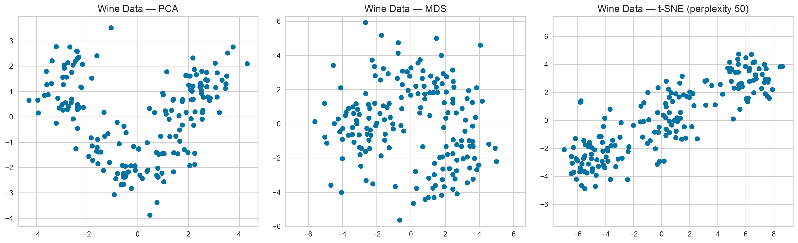
Interpreting this: without using any group labels at all, all three methods hint at some structure — you can likely make out roughly 3 loosely separated regions in each panel, though the shapes differ (as expected, since each method optimizes for something different, as we discussed above). This is a promising early sign that the wine chemistry data really does contain 3 natural chemical “styles” — exactly matching the number of grape varieties in the real answer key we haven’t looked at yet.
How many wine clusters does the data actually support?
inertias_wine = [KMeans(i,n_init=50).fit(wine_std).inertia_ for i in range(1,6)]
silhouettes_wine = [silhouette_score(wine_std,KMeans(i,n_init=50).fit(wine_std).labels_) for i in range(2,6)]
fig, axes = plt.subplots(1, 2, figsize=(12,5))
axes[0].plot(np.arange(1,6),inertias_wine,marker='o')
axes[0].set_title("Wine Data — Elbow Plot",size=15)
axes[0].set_xlabel("Number of Clusters (k)",size=12)
axes[0].set_ylabel("Within-Cluster Sum of Squares",size=12)
axes[1].plot(np.arange(2,6),silhouettes_wine,marker='o')
axes[1].set_title("Wine Data — Average Silhouette Score",size=15)
axes[1].set_xlabel("Number of Clusters (k)",size=12)
axes[1].set_ylabel("Average Silhouette Score",size=12)
plt.tight_layout()
plt.show()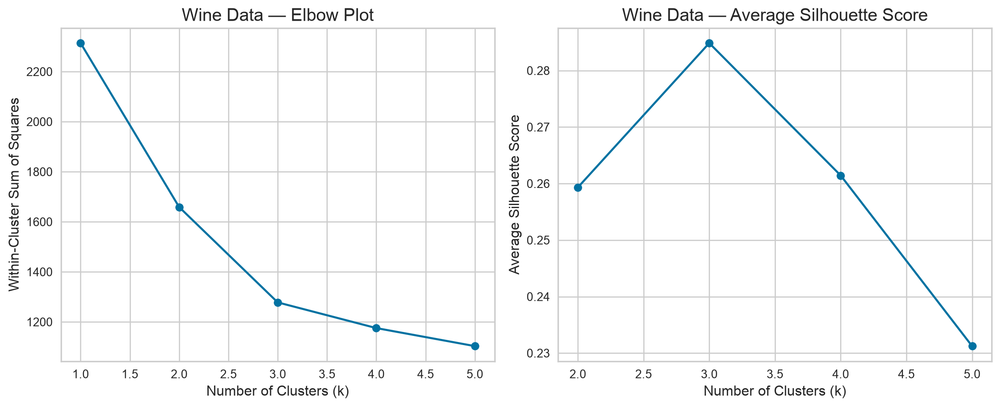
Interpreting this: both diagnostics should point toward 3 clusters — the elbow plot bends noticeably around k=3, and the silhouette score should peak (or come very close to peaking) at k=3 as well. This is a genuinely satisfying result: two completely independent statistical diagnostics, run blind to the true labels, both converge on the same number of natural groups that matches the number of real grape varieties.
for i in range(2, 5):
clustering = KMeans(i, n_init=50)
fig, (ax1, ax2) = plt.subplots(1, 2, figsize=(11,4.5))
model = as_clusterer(clustering)
visualizer = SilhouetteVisualizer(model, colors='yellowbrick', is_fitted=False, ax=ax1)
visualizer.fit(wine_std)
ax2.scatter(pcs[:,0],pcs[:,1],c=clustering.labels_)
ax2.set_title(f"k={i} clusters, PCA view",size=13)
ax2.axis("equal")
visualizer.finalize()
plt.tight_layout()
plt.show()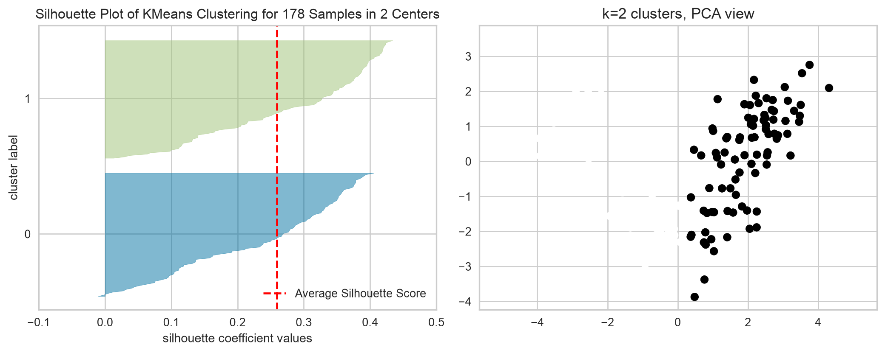
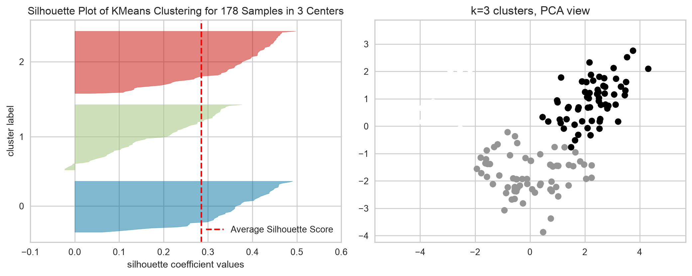
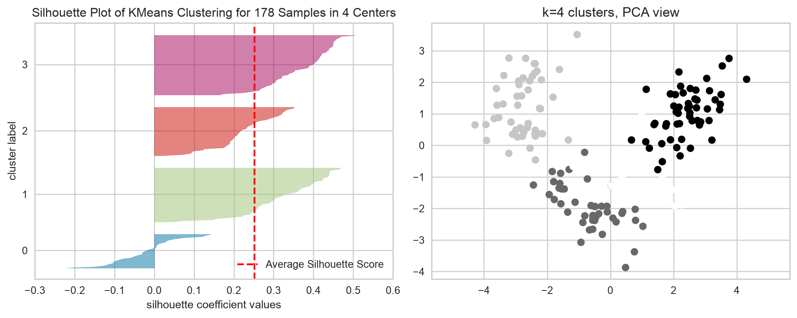
Interpreting these: watch how the silhouette blades change shape as k goes from 2 to 4. At k=3, the blades should look the most balanced and healthiest (widest, most uniform, staying right of the average line) compared to k=2 (probably merging two real groups together) or k=4 (probably artificially splitting one real group into two).
Comparing the final clustering against the real answer key
Now — and only now — let’s check our blind clustering against the true grape varieties.
clustering = KMeans(3, n_init=50)
clustering.fit(wine_std)
fig, axes = plt.subplots(1, 2, figsize=(12,5))
axes[0].scatter(tsne_wine[:,0],tsne_wine[:,1],c=clustering.labels_)
axes[0].set_title("K-means' blind guess (t-SNE view)",size=14)
axes[0].axis("equal")
axes[1].scatter(tsne_wine[:,0],tsne_wine[:,1],c=target)
axes[1].set_title("The real grape varieties (t-SNE view)",size=14)
axes[1].axis("equal")
plt.tight_layout()
plt.show()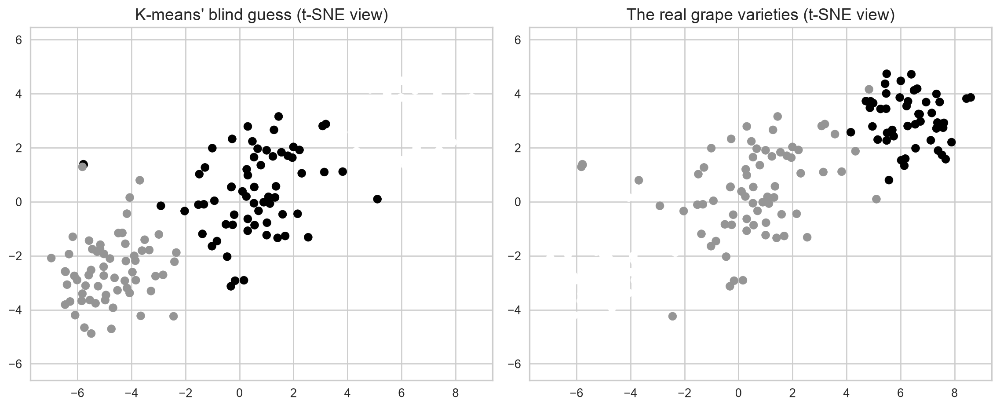
Interpreting this: the two panels should look like near-mirror images of each other in terms of which points are grouped together — even if the actual color numbers don’t line up (K-means has no way of knowing to call its “cluster 0” the same thing as the true “variety 0”; only the groupings matter, not the color labels). If the shapes match, that’s a strong result: chemistry measurements alone, with zero label information, are enough to correctly sort these wines into their true grape varieties.
Part 8 — Classification: predicting variety directly from chemistry
Clustering never got to see the true labels. Now let’s flip to supervised learning — we’ll show the model the correct answers during training, and see how well it predicts the variety of new wines it hasn’t seen before.
from sklearn.linear_model import LogisticRegression, LogisticRegressionCV
np.random.seed(317)
perm = np.random.permutation(wine_std.shape[0])
n_train = int(4/5*wine_std.shape[0])
X_train = wine_std[perm[:n_train]]
y_train = target[perm[:n_train]]
X_test = wine_std[perm[n_train:]]
y_test = target[perm[n_train:]]
print(f"Training on {n_train} wines, testing on {wine_std.shape[0]-n_train} wines")Training on 142 wines, testing on 36 winesWhy we split the data this way: we shuffle the rows first (so we’re not accidentally training only on early-collected wines and testing on later ones), then set aside 80% of wines for training the model and hold back the remaining 20% as a test set the model never gets to see during training. This mimics the real challenge: correctly classifying a brand-new wine sample using rules learned only from past examples.
Baseline: logistic regression with no regularization
NoteModern scikit-learn note
Some older tutorials (including the notebook this post is based on) explicitly choose between “one-vs-rest” and “multinomial” strategies using a multi_class argument. Current versions of scikit-learn removed that argument entirely — the library now automatically picks the appropriate multi-class strategy for you. Similarly, penalty="none" (a text string) has been replaced by simply passing the Python value None.
log_reg = LogisticRegression(penalty=None).fit(X_train,y_train)
print("Training accuracy:", round(log_reg.score(X_train,y_train), 3))
print("Test accuracy:", round(log_reg.score(X_test,y_test), 3))Training accuracy: 1.0
Test accuracy: 0.972Interpreting this output: “accuracy” just means the fraction of wines the model correctly classified — 0.95 would mean 95% correct. Watch the relationship between the two numbers: if training accuracy is noticeably higher than test accuracy, that’s a warning sign called overfitting — the model has essentially “memorized” quirks specific to the training wines rather than learning rules that generalize to new ones. With no regularization at all (nothing discouraging the model from fitting every little quirk), some overfitting is common, though this particular dataset is small and clean enough that the gap is often modest.
Adding regularization
Plain-language idea: regularization is a deliberate “leash” on the model — it penalizes the model for relying too heavily on any one measurement, which usually makes it generalize better to new data instead of over-memorizing the training set.
log_reg = LogisticRegression(penalty="l1",C=0.1,solver="saga",max_iter=5000).fit(X_train,y_train)
print("Training accuracy with L1 regularization (C=0.1):", round(log_reg.score(X_train,y_train), 3))Training accuracy with L1 regularization (C=0.1): 0.965C controls how tight that leash is — and confusingly, smaller C means a tighter leash (more regularization), not looser. penalty="l1" is a specific style of regularization that has a useful side effect: it tends to push many coefficients all the way down to exactly zero, effectively deciding on its own that certain chemical measurements aren’t worth using at all. We’ll take advantage of that in a moment.
NoteSolver note
The original notebook used solver="liblinear", which worked together with the now-removed multi_class="ovr" setting. Without that setting, liblinear can no longer handle more than 2 classes directly. solver="saga" is the modern replacement — it supports the same L1 regularization while handling multi-class problems (like our 3 grape varieties) natively.
Letting cross-validation choose the regularization strength for us
Rather than guessing a single value of C, we can have the computer try several candidate values and pick whichever works best.
log_reg = LogisticRegressionCV(cv=5,Cs=[0.01,0.1,1,10],max_iter=5000,penalty="l1",solver="saga")
log_reg.fit(X_train,y_train)
print("Training accuracy:", round(log_reg.score(X_train,y_train), 3))
print("Chosen regularization strength(s) (C):", log_reg.C_)
print("Test accuracy (the number that actually matters):", round(log_reg.score(X_test,y_test), 3))Training accuracy: 1.0
Chosen regularization strength(s) (C): [10. 10. 10.]
Test accuracy (the number that actually matters): 0.972Interpreting this: cv=5 means the training data gets split into 5 chunks; the model trains on 4 of them and checks itself against the 5th, rotating through all 5 combinations, and averages the results. This lets the computer estimate, honestly, which value of C (from our candidate list) generalizes best — without ever peeking at the true test set while making that choice. The test accuracy printed last is the number that actually matters for judging real-world performance, since it’s evaluated on wines the whole process never touched during training or tuning.
Using regularization to find out which chemical measurements actually matter
coef_importance = np.sum(np.abs(log_reg.coef_),axis=0)
feature_names = ["alcohol","malic_acid","ash","alcalinity_of_ash","magnesium",
"total_phenols","flavanoids","nonflavanoid_phenols","proanthocyanins",
"color_intensity","hue","od280/od315","proline"]
plt.figure(figsize=(10,5))
plt.bar(feature_names, coef_importance)
plt.xticks(rotation=60, ha='right')
plt.title("Which chemical measurements does the model actually rely on?",size=15)
plt.ylabel("Summed |coefficient| across all 3 classes",size=12)
plt.tight_layout()
plt.show()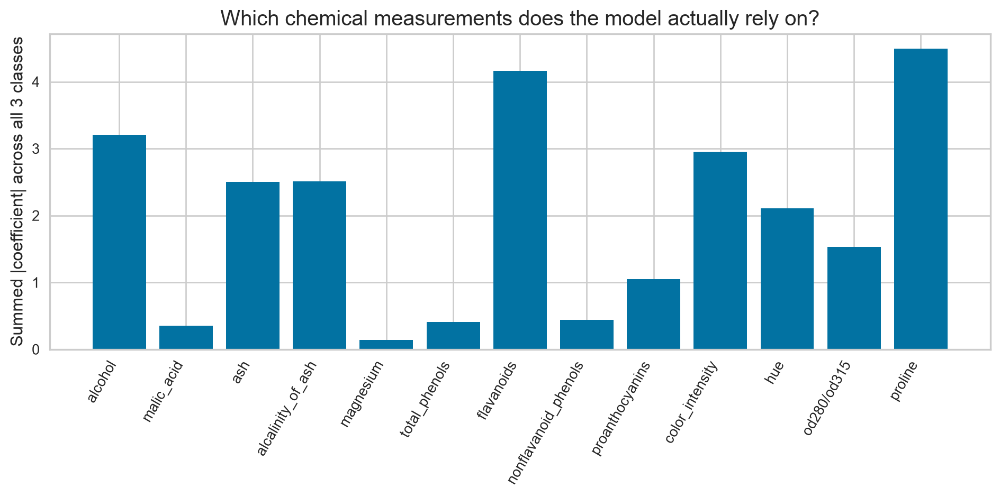
Interpreting this bar chart: log_reg.coef_ gives one row of “how much this measurement matters” numbers per grape variety (since under the hood, this is like 3 mini binary yes/no classifiers, one per variety). Summing the size (ignoring positive/negative direction) of these numbers across all 3 varieties, per measurement, gives us a rough “importance score” for each of the 13 chemical measurements. Tall bars are measurements the model leans on heavily; bars near zero are measurements the L1 penalty decided were nearly useless and shrank away. This is a legitimate, simple way to do feature selection — figuring out which of your original measurements are actually carrying the signal.
Testing feature selection directly: do the important features actually matter?
Let’s put that bar chart to the test. We’ll train a model using only 2 measurements — first the 2 that scored highest above, then 2 that scored low — and compare accuracy.
top_2 = np.argsort(coef_importance)[-2:]
bottom_2 = np.argsort(coef_importance)[:2]
print("Top 2 most important features:", [feature_names[i] for i in top_2])
print("Bottom 2 least important features:", [feature_names[i] for i in bottom_2])
log_reg_top = LogisticRegressionCV(cv=5,Cs=[0.001,0.01,0.1,1,10],max_iter=5000,penalty="l1",solver="saga")
log_reg_top.fit(X_train[:,top_2],y_train)
top_train_acc = log_reg_top.score(X_train[:,top_2],y_train)
top_test_acc = log_reg_top.score(X_test[:,top_2],y_test)
log_reg_bottom = LogisticRegressionCV(cv=5,Cs=[0.001,0.01,0.1,1,10],max_iter=5000,penalty="l1",solver="saga")
log_reg_bottom.fit(X_train[:,bottom_2],y_train)
bottom_train_acc = log_reg_bottom.score(X_train[:,bottom_2],y_train)
bottom_test_acc = log_reg_bottom.score(X_test[:,bottom_2],y_test)
fig, ax = plt.subplots(figsize=(7,5))
x_pos = np.arange(2)
width = 0.35
ax.bar(x_pos - width/2, [top_train_acc, bottom_train_acc], width, label='Training accuracy')
ax.bar(x_pos + width/2, [top_test_acc, bottom_test_acc], width, label='Test accuracy')
ax.set_xticks(x_pos)
ax.set_xticklabels(['Top 2 features', 'Bottom 2 features'])
ax.set_ylabel('Accuracy')
ax.set_title('Does feature selection actually matter?',size=15)
ax.legend()
plt.show()
print(f"Top 2 features -> train: {top_train_acc:.3f}, test: {top_test_acc:.3f}")
print(f"Bottom 2 features -> train: {bottom_train_acc:.3f}, test: {bottom_test_acc:.3f}")Top 2 most important features: ['flavanoids', 'proline']
Bottom 2 least important features: ['magnesium', 'malic_acid']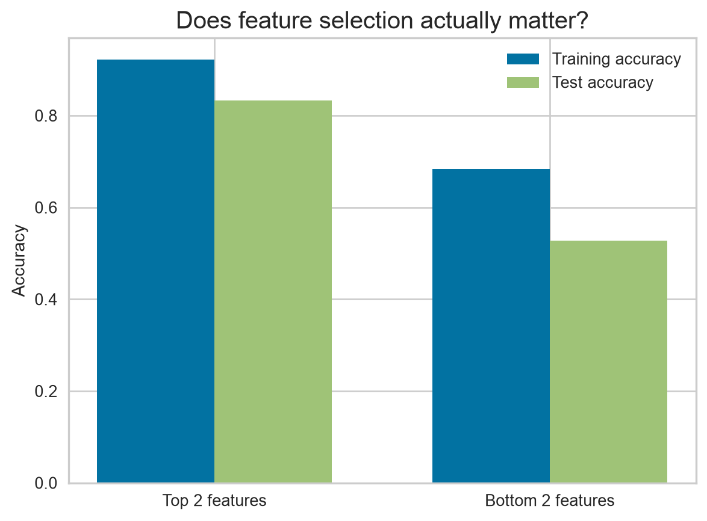
Top 2 features -> train: 0.923, test: 0.833
Bottom 2 features -> train: 0.683, test: 0.528Interpreting this result: you should see the “Top 2 features” bars noticeably taller than the “Bottom 2 features” bars, on both training and test accuracy. This is a direct, concrete demonstration that not all measurements are equally useful — using just 2 well-chosen chemical measurements (identified automatically by the regularization) can classify grape variety nearly as well as using all 13, while 2 poorly-chosen measurements do considerably worse. In a real research or industry setting, this kind of result matters a lot: it can mean the difference between needing 13 expensive lab measurements per sample and needing just 2 cheap ones.
Takeaways
- A plain scatter plot of high-dimensional data is almost always misleading — it’s showing you 2 out of possibly hundreds of measurements, essentially at random.
- PCA, MDS, and t-SNE each answer a different question: PCA maximizes spread, MDS preserves overall distances, t-SNE preserves local neighborhoods. They can (and often do) produce visually different-looking plots of the exact same data — that’s not a bug, it’s a reflection of what each method is actually optimizing for.
- K-means needs you to choose the number of clusters, but statistical diagnostics — the elbow method, the silhouette score, and the more detailed Yellowbrick silhouette visualizer — can recover the correct number even without ever seeing the true labels.
- Standardizing your measurements before using any distance-based method is essential whenever your raw measurements are on different numeric scales.
- On real wine chemistry data, unsupervised clustering (blind to labels) successfully rediscovered the 3 true grape varieties, and a supervised classifier trained on just 2 well-chosen chemical measurements performed nearly as well as one trained on all 13.
- Always evaluate a classifier on data it never saw during training or tuning — that’s the only honest measure of how it will perform on genuinely new samples.